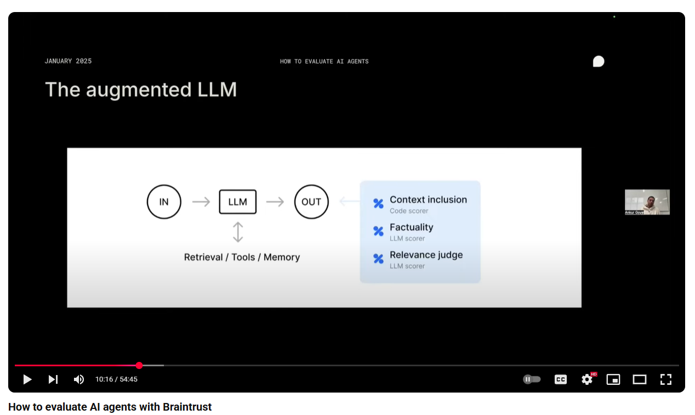
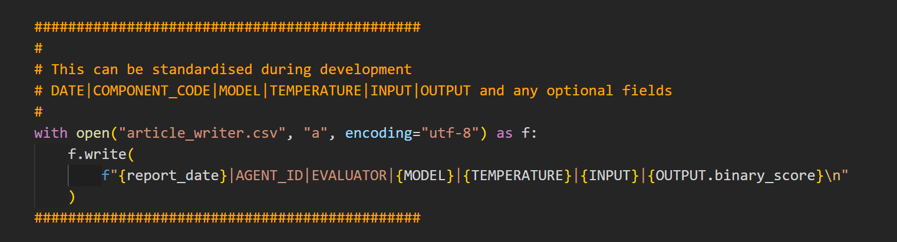
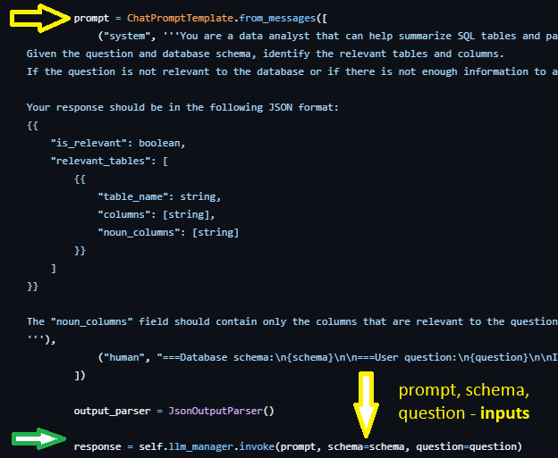

TLDR¶
- In production
- In real time
- In front of the client
Two decoupled parts - observability and evaluation
Observability¶
- Observability by tracing/logging out data.
- Performing evals on these datasets.
Agents/tools are (mathematically) a function with:
- input
- output
- retrieval/memory/tools (optionally)
- metadata (model, temperature, etc.)

Each Agent has its own self-reflection by exporting the above to a CSV.
This CSV can then be analysed using a range of Eval Libraries like Evidently, DeepEval and Ragas, with or without references (ground truths).

We can have two traces at each point. One a more concise version for the developer (and QA) as well as a complete trace for the QA.
We find where the LLM point is in our code if we are doing evals after dev:

Evaluation¶
Add REFERENCE column to dataset and then do evals.
Once we have our output dataset, we can add ground truths/references and then carry out evals using a range of libraries like Evidently.ai, (my favourite), RAGAS, DeepEval etc.
We can also create our own evals.
The log files are generated in real time enabling not just evaluation but also real time monitoring.
I have also found the log files very useful during development work and bug-fixing.
A/B Testing¶
We can have multiple versions of the same Agent running in parallel and then do A/B testing on them. This may just be changing the prompt so that we can find the best performing prompt for the Agent, or it may be changing the model used.
Vendor Example¶
Langsmith etc all make use of Open Telemetry which can be considered a Turbo Logging system. Ultimately, it is a trace system. Vendors then provide a UI to view the traces.
However, it is often more amenable to see horzontal formats, (CSVs), rather then vertical (UI) formats.
If we want to analyse 300 traces, we would want to export them to a CSV anyway.
We can always use BOTH the CSV and UI formats.
We can export Langsmith runs to CSVs using the following code:
import pandas as pd
from langsmith import Client
import os
# Initialize the client
client = Client(
api_url="https://api.smith.langchain.com",
api_key=os.getenv("LANGCHAIN_API_KEY") # Set your API key as env variable
)
# Export runs from a project
def export_runs_to_csv(project_name, output_file="langsmith_runs.csv"):
runs = []
# Fetch runs from the project
for run in client.list_runs(project_name=project_name):
# Complete list of fields available
run_data = {
# Required fields
"id": str(run.id),
"name": run.name,
"start_time": run.start_time,
"run_type": run.run_type,
"trace_id": str(run.trace_id),
# Optional timing fields
"end_time": run.end_time,
"first_token_time": getattr(run, 'first_token_time', None),
# Hierarchy and structure
"parent_run_id": str(run.parent_run_id) if run.parent_run_id else None,
"parent_run_ids": [str(id) for id in run.parent_run_ids] if getattr(run, 'parent_run_ids', None) else None,
"child_run_ids": [str(id) for id in run.child_run_ids] if getattr(run, 'child_run_ids', None) else None,
"dotted_order": getattr(run, 'dotted_order', ''),
# Session and project info
"session_id": str(run.session_id) if getattr(run, 'session_id', None) else None,
"reference_example_id": str(run.reference_example_id) if run.reference_example_id else None,
# Status and error handling
"status": getattr(run, 'status', None),
"error": run.error,
# Input/Output data
"inputs": str(run.inputs) if run.inputs else None,
"outputs": str(run.outputs) if run.outputs else None,
# Token usage metrics
"total_tokens": getattr(run, 'total_tokens', None),
"prompt_tokens": getattr(run, 'prompt_tokens', None),
"completion_tokens": getattr(run, 'completion_tokens', None),
# Cost metrics
"total_cost": float(run.total_cost) if getattr(run, 'total_cost', None) else None,
"prompt_cost": float(run.prompt_cost) if getattr(run, 'prompt_cost', None) else None,
"completion_cost": float(run.completion_cost) if getattr(run, 'completion_cost', None) else None,
# Metadata and tagging
"tags": ",".join(run.tags) if run.tags else None,
"extra": str(run.extra) if run.extra else None,
# Serialization and events
"serialized": str(run.serialized) if run.serialized else None,
"events": str(run.events) if run.events else None,
# Feedback and stats
"feedback_stats": str(getattr(run, 'feedback_stats', None)) if getattr(run, 'feedback_stats', None) else None,
# App and manifest info
"app_path": getattr(run, 'app_path', None),
"manifest_id": str(run.manifest_id) if getattr(run, 'manifest_id', None) else None,
# Dataset relationship
"in_dataset": getattr(run, 'in_dataset', None),
# Attachments
"attachments": str(run.attachments) if getattr(run, 'attachments', None) else None,
# Computed fields (properties)
"execution_order": getattr(run, 'execution_order', None),
"child_execution_order": getattr(run, 'child_execution_order', None),
# URL (computed property)
"url": getattr(run, 'url', None),
# Metadata and revision (computed properties)
"metadata": str(getattr(run, 'metadata', None)) if getattr(run, 'metadata', None) else None,
"revision_id": str(getattr(run, 'revision_id', None)) if getattr(run, 'revision_id', None) else None,
# Calculated duration (helpful metric)
"duration_ms": (run.end_time - run.start_time).total_seconds() * 1000 if run.end_time and run.start_time else None,
# Child runs (if present)
"child_runs_count": len(getattr(run, 'child_runs', [])) if getattr(run, 'child_runs', None) else 0,
}
runs.append(run_data)
# Convert to DataFrame and save
df = pd.DataFrame(runs)
df.to_csv(output_file, index=False)
print(f"Exported {len(runs)} runs to {output_file}")
# Usage
export_runs_to_csv("your-project-name")
All the essential fields from run_data are available to us in our custom tracing utility, so we do not lose anything of importance. Many fields are for the UI display.
Advantages¶
Decouples app code and evaluation code. We can move a 'node' from one place to another without having to change the code in the app.
Portable Agent/Eval combinations.
Evals are real time and support both developer and QA.
Clients can have a window on their Agents and have a greater sense of trust and understanding as they hand over their business to Agents.
Frictionless integration to existing apps and new ones.
CSV output easier to digest than UI traces. In fact, I tend to want to export the traces as CSVs.
If we are using some sort of Agent Context Protocol, we can avoid mixed telemetry systems by having each agent do its own telemetry.